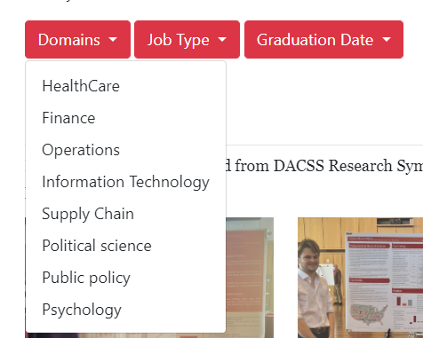
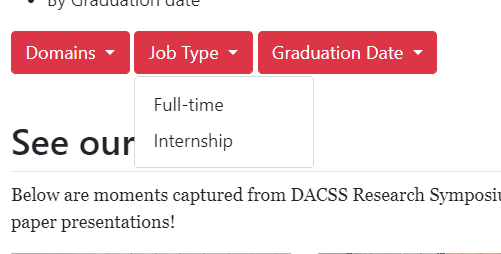
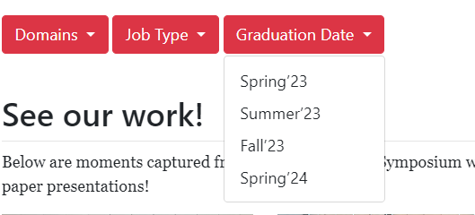
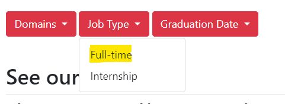
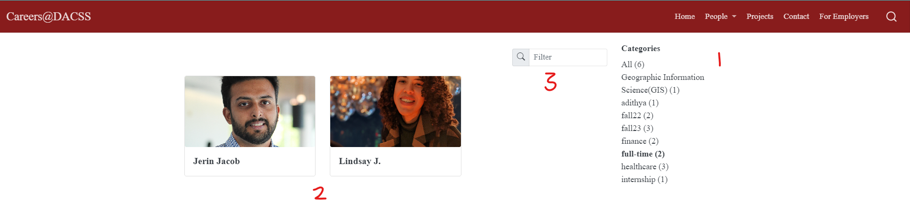
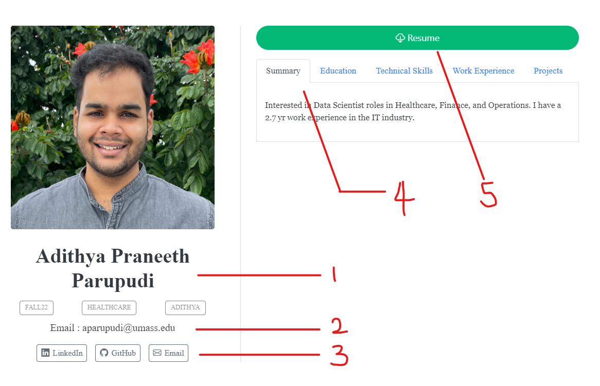
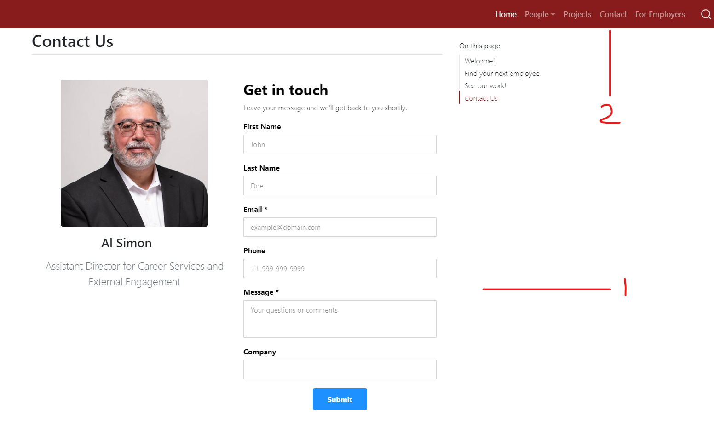
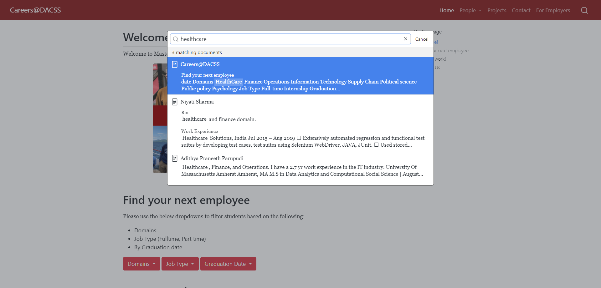

Find your next employee
By Domain of interest
The domain names shown here are the areas of interest where the student wants to work. In the domains section, please select one of the option shown in the dropdown, which will open student profiles in another page

By Job type
Job Type filter shows a list of students looking for full-time and internship roles.

By Graduation date
Find students based on their graduation date.

Students page
Based on the option selected from the dropdown, a new page is opened showing students under that tag. Lets see an example where full-time is selected from the Job-Type dropdown

1 - List of keywords to filter student profiles
2 - Student profiles looking for full-time as selected
3 - A filter button to search directly search with the names.

Exploring a student profile

1 - Student name
2 - Student’s email address
3 - Links to their GitHub and LinkedIn profiles
4 - At a glance, one can see a student’s quick Summary, Education details, Work Experience, Technologies, Work Experience, and Projects
5 - A button to download a student’s resume in .pdf format
Contact page
One can use either the homepage or the dedicated Contact page to communicate with DACSS.
1 - Use the form in the homepage to compose an email to Al Simon, Assistant Director for Career Services and External Engagement
2 - In the navigation bar, click on the Contact to find the same interface to reach out to us.

Global Search
If the recruiter is unable to find a student profile from the options given, there is a global search option in the top-right corner of the navigation bar which searches through all the profiles in the website. Below is an example where ’healthcare” is searched and it is showing all student profiles where the word exists.

Terminology
GitHub - An online platform for version control and collaboration, enabling developers to work on projects and share code. By clicking on the project links, recruiters can view and assess the students’ work, explore their code repositories, and gain insights into their programming skills and experience